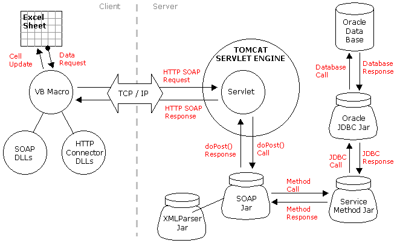

Le W3C définit un Web service: “ a software system designed to support interoperable machine-to-machine interaction over a network. ”
Le W3C distingue 2 types de web services:
Les services web REST-compliant (ou RESTful) sont présentés ici.
Les web-services de type 'arbitrary' sont aujourd'hui implémentés dans leur écrasante majorité en SOAP et WSDL.
Pas de nouveauté conceptuelle par rapport à d'autres propositions antérieures (e.g. DCE RPC ou CORBA IIOP), mais un engouement inégalé de la part de l'industrie (e.g. Microsoft, IBM, Sun Microsystems, BEA, HP, Oracle, SAP, ...).
Une part du succès de SOAP vient de son adossement au W3C, qui publie la spécification de SOAP sous la forme d'une recommandation.
De par sa simplicité et les standards utilisés, SOAP doit permettre d'embarquer des services distants dans n'importe quelle application.
De par sa simplicité et les standards utilisés, SOAP doit permettre d'embarquer des services distants dans n'importe quelle application.

<?xml version="1.0" encoding="UTF-8"?>
<soap:Envelope
xmlns:soap="http://schemas.xmlsoap.org/soap/envelope/" >
<soap:Body>
<po:purchaseOrder orderDate="2003-09-22"
xmlns:po="http://www.Monson-Haefel.com/jwsbook/PO">
<po:accountName>Amazon.com</po:accountName>
<po:accountNumber>923</po:accountNumber>
<po:address>
<po:name>AMAZON.COM</po:name>
<po:street>1850 Mercer Drive</po:street>
<po:city>Lexington</po:city>
<po:state>KY</po:state>
<po:zip>40511</po:zip>
</po:address>
<po:book>
<po:title>J2EE Web Services</po:title>
<po:quantity>300</po:quantity>
<po:wholesale-price>24.99</po:wholesale-price>
</po:book>
</po:purchaseOrder>
</soap:Body>
</soap:Envelope>
Rappel: les namespaces (espaces de nommage) permettent d'éviter les conflits de noms. L'objectif est de permettre l'emploi de plusieurs langages dans un seul document.
<balise xmlns:mynsp="http://icps.u-strasbg.fr/course/sd/2005">
<mynsp:syllabus>
...
</mysnp:syllabus>
</balise>
On peut utiliser des default namespaces pour ne pas avoir à spécifier le préfixe à chaque balise.
Ils sont définis avec xmlns sans préfixe.
<html xmlns="http://www.w3.org/1999/xhtml"> <title>...</title> </html>
L'entête Header est optionnelle:
Le corps Body est obligatoire:
SOAP 1.2 :
La définition du format des messages de style RPC se trouve dans
la partie 2, section 4
de la recommandation.
Les éléments nécessaires à un appel RPC sont :
Note: par analogie avec les modèles RPC existants, 1. est souvent dénommé proxy.
<body>
<ns1:foisdeux xmlns:ns1="urn:montest">
<param1 xsi:type="xsd:int">63</param1>
</ns1:foisdeux>
</body>
Le message en réponse devrait être:
<body>
<ns1:foisdeuxResponse xmlns:ns1="urn:montest">
<return xsi:type="xsd:int">126</return>
</ns1:foisdeux>
</body>
Toujours un seul paramètre en retour, de type simple ou complexe. Utilise l'espace de nommage de XML Schema pour les types.
Dans l'exemple précédent, l'utilisateur du service doit connaître, le nom des opérations disponibles, le type des entrées et sorties, à quelle machine s'adresser, ....
Problème: comment faire pour changer un service web de machine ?
Réponse:
Ne pas donner directement au client la localisation et les protocoles d'accès au service,
mais une description du service qui contient ces informations. On peut alors changer la
description: WSDL
Cette description peut être dans un fichier distribué, à une URL, ou localisée par un annuaire (UDDI).
WSDL (Web Service Description Language) permet la description de web services dans un langage XML. C'est une note du W3C.
Permet de séparer la description des fonctionnalités abstraites offertes par un service, des détails concrets d'une description de service, tels que "comment" et "où" cette fonctionnalité est proposée.
Un document WSDL utilise les éléments suivants:
| Element | Définit |
|---|---|
| <portType> | Les opérations proposées par le web service |
| <message> | Les messages utilisés par le web service |
| <types> | les types de données utilisées par le web service |
| <binding> | Les protocoles de communication utilisés par le web service |
<definitions> <types> ... (utilise la notation des XML Schema) .... </types> <message> ... </message> <portType> ... </portType> <binding> ... </binding> </definitions>
Un doc. WSDL peut contenir d'autres éléments, e.g. les éléments extension et services permettant de gouper les définitions de plusieurs web services en 1 seul doc.
Exemple: description d'un service qui propose une opération HelloWorld.
Entête:
<definitions name="HelloService"
targetNamespace="http://www.ecerami.com/wsdl/HelloService.wsdl"
xmlns="http://schemas.xmlsoap.org/wsdl/"
xmlns:soap="http://schemas.xmlsoap.org/wsdl/soap/"
xmlns:tns="http://www.ecerami.com/wsdl/HelloService.wsdl"
xmlns:xsd="http://www.w3.org/2001/XMLSchema">
Définition des Namespaces pour éviter les conflits de noms. targetNamespace permet de référencer le document lui-même. Le namespace par défaut est http://schemas.xmlsoap.org/wsdl/ (i.e. sans préfixe, c'est le namespace utilisé).
<message name="DisBonjourRequest"> <part name="monom" type="xsd:string"/> </message> <message name="DisBonjourResponse"> <part name="greeting" type="xsd:string"/> </message>
Les deux messages définis correspondent aux entrées et sorties. Pour plusieurs arguments en entrée ou en sortie, on aurait plusieurs éléments <part>.
<portType name="bonjour_PortType">
<operation name="DisBonjour">
<input message="tns:DisBonjourRequest"/>
<output message="tns:DisBonjourResponse"/>
</operation>
</portType>
L'élément <portType> est le plus important: il définit le web service=l'opération (méthode) qu'on peut invoquer et les messages impliqués.
<binding name="..." type="...">
<soap:binding style="rpc|document" transport="...http..."/>
<operation name="...">
.... input et output de l'operation ...
</operation >
</binding>
Indique par quel protocole les opérations vont être transportées. Le plus souvent, à travers SOAP comme ici.
<binding name="bonjour_Binding" type="tns:bonjour_PortType">
<soap:binding style="rpc" transport="http://schemas.xmlsoap.org/soap/http"/>
<operation name="DisBonjour">
<soap:operation soapAction="DisBonjour"/>
<input>
<soap:body
encodingStyle="http://schemas.xmlsoap.org/soap/encoding/"
namespace="urn:examples:helloservice"
use="encoded"/>
</input>
<output>
<soap:body
encodingStyle="http://schemas.xmlsoap.org/soap/encoding/"
namespace="urn:examples:helloservice"
use="encoded"/>
</output>
</operation>
</binding>
Les messages XML sont la plupart du temps cachés au programmeur car il existe des outils existent dans de nombreux langages pour encoder/décoder les messages XML. (On parle de sérialisation/dé-sérialisation).
Quelques toolkits sont présentés ici:SOAP::Lite permet de construire une requête RPC de manière très concise de la forme:
use SOAP::Lite;
print SOAP::Lite -> uri($namespace)
-> proxy($service_URL)
-> $method_name($param)
-> result;
Detailed Description
IMPORTANT NOTE: Our own access to the Altavista Babelfish data has been
terminated, so this web service has been disabled. The service will remain down
indefinitely until a suitable replacement translation engine can be found.
Appel au service de traduction BabelFish.
source : [ babelfish.pl ].
#!perl -w
use SOAP::Lite;
print SOAP::Lite
-> uri('urn:xmethodsBabelFish')
-> proxy('http://services.xmethods.net:80/perl/soaplite.cgi')
-> BabelFish('en_fr','The weather is fine. Let us go.')
-> result;
SOAP::Lite permet d'invoquer indirectement une méthode décrite dans un fichier WSDL. Dans ce cas l'objet est construit par:
use SOAP::Lite;
print SOAP::Lite -> service($URL_to_wsdl_file)
-> $method_name($param);
Une requête est faite pour récupérer la description, la parse, construit le stub (i.e. l'objet équivalent évoquant le service).
Note 1: on peut invoquer plusieurs fois le service sans refaire la requête au WSDL :
my $service= SOAP::Lite -> service('http://... .wsdl');
print $service->method('a') + $service->method('a');
Note 2: le fichier peut être local :
->service('file:// ... .wsdl');
Appel au service de traduction BabelFish
à travers une description WSDL.
source : [ babelfish2.pl ].
#!perl -w
use SOAP::Lite;
print SOAP::Lite
-> service('http://www.xmethods.net/sd/2001/BabelFishService.wsdl')
-> BabelFish('en_fr','The weather is fine. Let us go.');
//
// XMethods sample client for the Stock Quote service
//
import java.io.*;
import java.net.*;
import java.util.*;
import org.apache.soap.util.xml.*;
import org.apache.soap.*;
import org.apache.soap.rpc.*;
public class stockquoteClient{
public static float getQuote (URL url, String symbol) throws Exception {
Call call = new Call ();
// Service uses standard SOAP encoding
String encodingStyleURI = Constants.NS_URI_SOAP_ENC;
call.setEncodingStyleURI(encodingStyleURI);
// Set service locator parameters
call.setTargetObjectURI ("urn:xmethods-delayed-quotes");
call.setMethodName ("getQuote");
// Create input parameter vector
Vector params = new Vector ();
params.addElement (new Parameter("symbol", String.class, symbol, null));
call.setParams (params);
// Invoke the service ....
Response resp = call.invoke (url,"");
// ... and evaluate the response
if (resp.generatedFault ()) {
throw new Exception();
} else {
// Call was successful. Extract response parameter and return result
Parameter result = resp.getReturnValue ();
Float rate=(Float) result.getValue();
return rate.floatValue();
}
}
// Driver to illustrate service invocation
public static void main(String[] args) {
try {
URL url=new URL("http://services.xmethods.net:80/soap");
String symbol= "TRW";
float quote = getQuote(url,symbol);
System.out.println(quote);
}
catch (Exception e) {e.printStackTrace();}
}
}
PHP contient depuis PHP5 un support natif de SOAP (si compilé avec --enable-soap).
PHP dispose des classess suivantes pour manipuler le XML SOAP:
Etapes pour construire un client SOAP. Illustré ici avec PHP.
<?php
$wsdl_url = "http://soap.amazon.com/schemas2/AmazonWebServices.wsdl";
$client = new SoapClient( $wsdl_url );
$ops = $client -> __getFunctions();
print_r( $ops );
?>
Array
(
[0] => ProductInfo KeywordSearchRequest(KeywordRequest $KeywordSearchRequest)
[1] => ProductInfo PowerSearchRequest(PowerRequest $PowerSearchRequest)
[2] => ProductInfo BrowseNodeSearchRequest(BrowseNodeRequest $BrowseNodeSearchRequest)
[3] => ProductInfo AsinSearchRequest(AsinRequest $AsinSearchRequest)
[4] => ProductLineArray BlendedSearchRequest(BlendedRequest $BlendedSearchRequest)
[5] => ProductInfo UpcSearchRequest(UpcRequest $UpcSearchRequest)
[6] => ProductInfo AuthorSearchRequest(AuthorRequest $AuthorSearchRequest)
[7] => ProductInfo ArtistSearchRequest(ArtistRequest $ArtistSearchRequest)
[8] => ProductInfo ActorSearchRequest(ActorRequest $ActorSearchRequest)
[9] => ProductInfo ManufacturerSearchRequest(ManufacturerRequest $ManufacturerSearchRequest)
[10] => ProductInfo DirectorSearchRequest(DirectorRequest $DirectorSearchRequest)
[11] => ListingProductDetails ExchangeSearchRequest(ExchangeRequest $ExchangeSearchRequest)
[12] => ProductInfo ListManiaSearchRequest(ListManiaRequest $ListManiaSearchRequest)
[13] => ProductInfo WishlistSearchRequest(WishlistRequest $WishlistSearchRequest)
[14] => SellerProfile SellerProfileSearchRequest(SellerProfileRequest $SellerProfileSearchRequest)
[15] => SellerSearch SellerSearchRequest(SellerRequest $SellerSearchRequest)
[16] => MarketplaceSearch MarketplaceSearchRequest(MarketplaceRequest $MarketplaceSearchRequest)
[17] => ProductInfo SimilaritySearchRequest(SimilarityRequest $SimilaritySearchRequest)
[18] => ShoppingCart GetShoppingCartRequest(GetShoppingCartRequest $GetShoppingCartRequest)
[19] => ShoppingCart ClearShoppingCartRequest(ClearShoppingCartRequest $ClearShoppingCartRequest)
[20] => ShoppingCart AddShoppingCartItemsRequest(AddShoppingCartItemsRequest $AddShoppingCartItemsRequest)
[21] => ShoppingCart RemoveShoppingCartItemsRequest(RemoveShoppingCartItemsRequest $RemoveShoppingCartItemsRequest)
[22] => ShoppingCart ModifyShoppingCartItemsRequest(ModifyShoppingCartItemsRequest $ModifyShoppingCartItemsRequest)
)
<soap:Header>
<Credentials xmlns="my.namespace.cred.steph">
<login>string</login>
<password>string</password>
</Credentials>
</soap:Header>
<?php
$login = "toto";
$pasword="x1ert5!";
$header = new SOAPHeader("my.namespace.cred.steph",
"Credentials",
array(
"login"=> $username,
"password"=> $password,
);
/* on suppose qu'on a créé $client = new SoapClient(...) */
$client -> __setSoapHeaders( $header );
?>
<param1 xsi:type="xsd:int">63</param1>
<param2 xsi:type="xsd:string">toto</param2>
<?php $param1 = new SoapParam( (int)63, "param1"); $param2 = new SoapParam( "toto" , "param2"); ?>
<body>
<ns1:foisdeux xmlns:ns1="urn:montest">
<param1 xsi:type="xsd:int">63</param1>
</ns1:foisdeux>
</body>
<?php $param1 = new SoapParam( (int)63, "param1"); $client = new SoapClient( $url_wsdl ); $client -> foisdeux( $param1 ); ?>
Attention: cet exercice nécessite de créer un compte chez Google (gratuité totale). Je n'ai aucun intérêt dans cette entreprise. Néanmoins, La contrepartie à la création d'un compte est l'utilisation de services puissants qui justifient l'exercice.
Google fournit des services SOAP (moyennant la création d'une clé). Ceux ci sont décrits dans le fichier WSDL suivant : [ GoogleSearch.wsdl ].
Le site XMethods recense un ensemble de web-services publics.
Parmi ceux-ci un service de localisation géographique capable de localiser une IP. La fiche de ce service est ici
Ecrire une requête SOAP pour trouver la latitude et longitude d'une IP dont vous connaissez l'emplacement géographique.
Pour les détails, voir l'exercice de mise en application: [ html ].
Mon sentiment personnel: